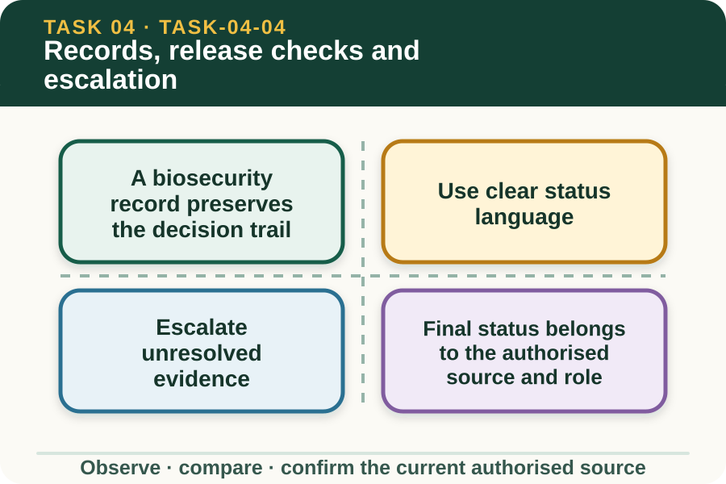

Learning purpose
Document what was found and done, and refer any unresolved contamination or equipment concern.
Task 4 · Lesson 4 of 4
Document what was found and done, and refer any unresolved contamination or equipment concern.
Learning purpose
Document what was found and done, and refer any unresolved contamination or equipment concern.
Success criteria
Learning boundary
Supplementary learning and formative practice only. Current RTO assessment, local procedures and authorised supervision control real work.

An inspection or work record links the item, date, task context, observations, authorised activity, unresolved findings and people notified. This traceability helps the next person understand what is confirmed and what still needs action.
The controlled workplace form decides exact fields, signatures, storage and submission. This site uses fictional records only and does not copy the Machinery Vehicle Decontamination Report or an RTO assessment template.
Records should clearly distinguish observed, action recorded, referred, pending confirmation and authorised final status. Mixing these separate stages can make an unresolved item appear formally approved.
Avoid vague labels such as done or okay when the controlling procedure expects a specific status. If the learner is not authorised to choose the status, name the observation and referral instead.
Escalation is required when observed material remains, an area cannot be confirmed, equipment damage affects the task, records conflict or the current procedure cannot be identified. These are evidence gaps, not permission to repeat or invent an action.
A useful escalation states the item, finding, location, action status and exact decision required. It stays with the designated workplace role and protects private or operational information.
Release means the item has met the workplace's current requirements and has been approved by the authorised role. The criteria may vary with property, item, origin, destination and biosecurity context.
This module does not state those criteria. The learner practises recognising when evidence is incomplete and checking that a final decision has been recorded by the correct person.
Fictional worked example
Observed evidence: A fictional record shows an activity entry and a supervisor name, but one required inspection area is marked 'not accessible' and the final-status field is blank. Decision and reason: The record does not support an assumption that the item is released. Safe action: The learner highlights the unresolved area and asks the authorised supervisor to confirm the next controlled action and status. Result: The supervisor records that the item remains pending. Next check or record: The learner checks that the pending status is visible in the handover and does not add release criteria.
Related records should agree on item identity, dates, origin or destination where required, findings and current status. A movement record saying available cannot safely coexist with an unresolved inspection status without review.
Do not select the record that enables the preferred outcome. Present the conflict to the authorised role and preserve both sources until the workplace correction process resolves it.
A good handover tells the receiver what is confirmed, what is pending, what has been reported and who controls the next decision. It avoids diagnosis, blame and practical instructions that are not part of the current record.
Website practice supports the structure of that handover. It does not approve movement, release equipment, certify cleaning, authorise practical workplace tasks or demonstrate vocational competency decisions.
Formative practice
Each option explains the consequence. These answers save only on this device.
Written application
Apply and keep a learning record
Compare fictional inspection, activity and movement records. Identify missing or conflicting status and draft an escalation. Do not use real property, vehicle, worker or assessor information.
Learning record: A supplementary-learning record audit and handover that clearly distinguishes confirmed, referred and pending information.
Lesson responses and the activity are formative learning only. Formal sufficiency and competence remain with the current RTO process.
Next: return to the task hub and follow the teacher-confirmed assessment direction.
Source basis: AHCBIO203 Release 1 requirements for recording cleaning history, documenting inspection results and delivering reports. Current property procedures and authorised roles control release criteria and final status.